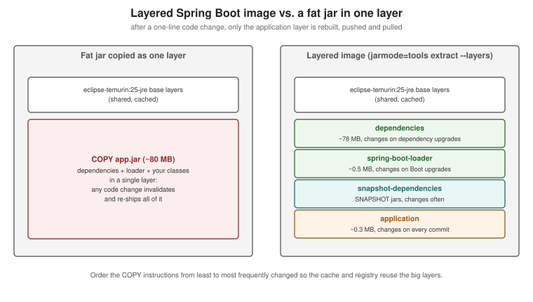

Java and Spring Boot Images
|
This content was generated with the assistance of AI and should be verified against the official documentation before being relied on in production. |
This page turns a Spring Boot 4.1.x service on Java 25 into a container image, three ways: a hand-written
multi-stage Dockerfile, Cloud Native Buildpacks through spring-boot:build-image, and Jib. It builds on the generic
material in Build Cache and Multi-Stage Builds and
targets Docker Engine 29.8.x with BuildKit 0.33.x and the docker/dockerfile:1 frontend. The Quarkus counterpart — Quarkus’s own Jib, Docker, Buildpacks and OpenShift extensions — is on
Quarkus: Container Images.
Choosing a path
(Maven, Java 25)"] --> q{"How much control
do you need?"} q -->|Full control, any base image,
extra OS packages| df["1. Multi-stage Dockerfile
docker build"] q -->|No Dockerfile, sensible defaults,
automatic JVM tuning| bp["2. Cloud Native Buildpacks
./mvnw spring-boot:build-image"] q -->|No Docker daemon,
reproducible, fast pushes| jib["3. Jib
./mvnw jib:build"] df --> img["OCI image with dependency
and application layers"] bp --> img jib --> img
| Dockerfile | Buildpacks (build-image) |
Jib | |
|---|---|---|---|
Needs a Docker daemon |
Yes (BuildKit) |
Yes (runs the builder in a container) |
No ( |
You maintain |
The Dockerfile |
Nothing but plugin configuration |
Plugin configuration |
Layering |
Explicit, via |
Automatic, honours |
Automatic (dependencies, resources, classes) |
JVM memory tuning |
You set |
Automatic (Paketo memory calculator) |
You set JVM flags |
Base image |
Any (Temurin, DHI, distroless) |
The builder’s run image (Paketo Ubuntu "tiny" by default) |
Configurable ( |
House convention |
Local development, special needs |
Used by the house |
Documented for Quarkus; option for Spring |
Path 1: a multi-stage Dockerfile with layered extraction
A Spring Boot executable jar contains a layers.idx index that groups its content by how often it changes:
dependencies, spring-boot-loader, snapshot-dependencies and application. The tools jar mode extracts the
jar into one directory per layer, so each can become a separate image layer and a code change re-ships only the
small application layer:

# syntax=docker/dockerfile:1
# ---- build: compile with the Maven wrapper, caching ~/.m2 across builds; runs on the builder's own platform
FROM --platform=$BUILDPLATFORM eclipse-temurin:25-jdk AS build
WORKDIR /src
COPY mvnw pom.xml ./
COPY .mvn/ .mvn/
RUN --mount=type=cache,target=/root/.m2 ./mvnw -B -ntp dependency:go-offline
COPY src/ src/
RUN --mount=type=cache,target=/root/.m2 ./mvnw -B -ntp package -DskipTests \
&& cp target/*.jar /tmp/application.jar
# ---- extract: split the jar into its layers
FROM eclipse-temurin:25-jre AS extract
WORKDIR /builder
COPY --from=build /tmp/application.jar application.jar
RUN java -Djarmode=tools -jar application.jar extract --layers --destination extracted
# ---- runtime: JRE, non-root, one COPY per layer (least to most frequently changed)
FROM eclipse-temurin:25-jre AS runtime
RUN apt-get update \
&& apt-get install -y --no-install-recommends curl \
&& rm -rf /var/lib/apt/lists/* \
&& groupadd --system --gid 10001 app \
&& useradd --system --uid 10001 --gid app --no-create-home app
WORKDIR /application
COPY --from=extract /builder/extracted/dependencies/ ./
COPY --from=extract /builder/extracted/spring-boot-loader/ ./
COPY --from=extract /builder/extracted/snapshot-dependencies/ ./
COPY --from=extract /builder/extracted/application/ ./
USER 10001:10001
EXPOSE 8080
ENV MANAGEMENT_ENDPOINT_HEALTH_PROBES_ENABLED=true
HEALTHCHECK --interval=15s --timeout=3s --start-period=60s --retries=3 \
CMD ["curl", "-fsS", "http://localhost:8080/actuator/health/readiness"]
STOPSIGNAL SIGTERM
ENTRYPOINT ["java", "-XX:MaxRAMPercentage=75", "-jar", "application.jar"]docker build -t orders-service:1.4.0 .
docker run --rm -p 127.0.0.1:8080:8080 --memory 768m orders-service:1.4.0
docker image history orders-service:1.4.0 # the application layer is only a few hundred KBDerived from Spring Boot’s Efficient
Container Images and
Dockerfiles pages (the
extract --layers --destination extracted command and one COPY per layer are taken from there) and Docker’s
Java guide. Notes on the choices:
-
--platform=$BUILDPLATFORMon the build stage: the jar it produces is platform-independent bytecode, so in a multi-platform build (--platform linux/amd64,linux/arm64) Maven runs once, natively on the builder, instead of once per target under QEMU emulation. Theextractandruntimestages keep the default target platform, so each image gets a JRE (andcurl) for its own architecture; onlyapplication.jarcrosses from the build stage. See BuildKit and Buildx. -
eclipse-temurin:25-jreis the Eclipse Temurin JRE on Ubuntu. It ships neithercurlnorwget, hence the explicit install for theHEALTHCHECK; drop both if your platform probes the endpoint itself (Kubernetes, ECS), which is the more common production setup. -
Readiness probe:
/actuator/health/readinessrequires Spring Boot Actuator; probe groups are enabled automatically on Kubernetes and elsewhere withmanagement.endpoint.health.probes.enabled=true(set here through the environment). -
Memory:
-XX:MaxRAMPercentage=75sizes the heap from the container limit (see What the JVM sees). -
Graceful shutdown: the JVM is PID 1 in exec form, so
SIGTERMtriggers Spring Boot’s graceful shutdown (enabled by default); keep the orchestrator’s stop timeout abovespring.lifecycle.timeout-per-shutdown-phase(30 seconds by default). -
AOT cache: on Java 25 Spring Boot documents an extra training-run step (
java -XX:AOTCacheOutput=app.aot -Dspring.context.exit=onRefresh -jar application.jar) and-XX:AOTCache=app.aotat start-up for faster start times; see the Dockerfiles page linked above.
.dockerignore for a Maven project
.git
.github
.idea
.vscode
*.iml
target/
**/*.log
.env
compose*.yamlThe Dockerfile above builds inside Docker, so target/ is excluded entirely. Derived from
.dockerignore files.
Docker Hardened Images instead of Temurin
Swap the FROM lines for a Docker Hardened Image pair — a -dev Maven/JDK image for the build stage and a
distroless JRE image for the runtime stage — following Docker’s
Java migration example. The runtime variant has no shell or
package manager, so remove the apt-get step and the HEALTHCHECK and probe from the platform instead.
docker init for Java
docker init asks a few questions and writes a Dockerfile, compose.yaml, .dockerignore and README.Docker.md
for a Maven project packaged as an uber jar — a reasonable starting point to adapt to the layered layout above:
docker init # choose "Java", the source directory, the Java version and the portDerived from docker init.
Path 2: Cloud Native Buildpacks with spring-boot:build-image
The Spring Boot Maven plugin can build an OCI image without a Dockerfile, using a Cloud Native Buildpacks builder
(Paketo’s paketobuildpacks/builder-noble-java-tiny by default). The Java buildpack installs a JRE matching the
project’s Java version, applies the jar’s layer index, and computes memory flags at container start from the
container limit.
./mvnw spring-boot:build-image \
-Dspring-boot.build-image.imageName=ghcr.io/myorg/orders-service:1.4.0
docker run --rm -p 127.0.0.1:8080:8080 ghcr.io/myorg/orders-service:1.4.0<plugin>
<groupId>org.springframework.boot</groupId>
<artifactId>spring-boot-maven-plugin</artifactId>
<configuration>
<image>
<name>ghcr.io/myorg/${project.artifactId}:${project.version}</name>
<env>
<BP_JVM_VERSION>25</BP_JVM_VERSION>
<BPE_DELIM_JAVA_TOOL_OPTIONS xml:space="preserve"> </BPE_DELIM_JAVA_TOOL_OPTIONS>
<BPE_APPEND_JAVA_TOOL_OPTIONS>-XX:+HeapDumpOnOutOfMemoryError</BPE_APPEND_JAVA_TOOL_OPTIONS>
</env>
</image>
<docker>
<publishRegistry>
<url>${docker.publishRegistry.url}</url>
<username>${docker.publishRegistry.username}</username>
<password>${docker.publishRegistry.password}</password>
</publishRegistry>
</docker>
</configuration>
</plugin>With that configuration a CI job can build and push in one step, passing credentials as properties — this is the
command the house deploy.yml uses (see Docker
CI/CD with GitHub Actions):
./mvnw -B -ntp spring-boot:build-image -DskipTests \
-Dspring-boot.build-image.imageName=ghcr.io/myorg/orders-service:1.4.0 \
-Dspring-boot.build-image.publish=true \
-Ddocker.publishRegistry.url=ghcr.io \
-Ddocker.publishRegistry.username="$REGISTRY_USERNAME" \
-Ddocker.publishRegistry.password="$REGISTRY_PASSWORD"Derived from the Spring Boot Maven plugin’s Packaging
OCI Images page (image name, builder, env, publish and docker.publishRegistry parameters, and the
runtime-JVM-configuration example), Cloud Native Buildpacks and
Paketo Buildpacks. Without docker.publishRegistry credentials the plugin falls back to the
credential helpers and ~/.docker/config.json. Buildpacks also work with Podman or Colima by pointing the
plugin’s docker.host at their socket.
Path 3: Jib
Jib builds images from the Maven project directly — no Dockerfile and no Docker daemon — with layers for dependencies, resources and classes, and reproducible timestamps by default:
./mvnw compile com.google.cloud.tools:jib-maven-plugin:3.5.2:build \
-Djib.from.image=eclipse-temurin:25-jre \
-Dimage=ghcr.io/myorg/orders-service:1.4.0
./mvnw compile com.google.cloud.tools:jib-maven-plugin:3.5.2:dockerBuild -Dimage=orders-service:dev # into the local daemonDerived from the Jib Maven plugin documentation. The Quarkus page covers Jib in more depth (it is Quarkus’s default container-image extension); see Quarkus: Container Images.
Native images
A GraalVM native executable (./mvnw -Pnative spring-boot:build-image or native:compile) starts in milliseconds
and uses far less memory, at the cost of build time and reflection configuration. It is out of scope here; see
Spring Boot’s GraalVM Native Image
Support.